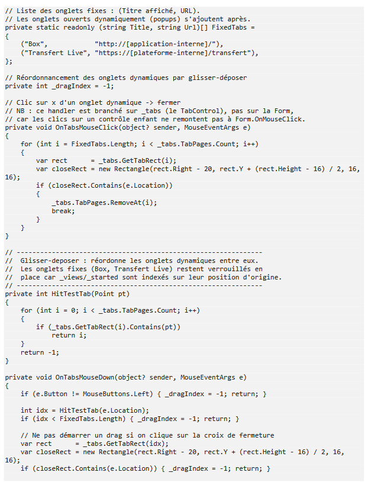

Expérience Professionnelle
Stage — Chronosphères
Contexte
Chronosphères (DESBOS Info Labo) est une entreprise basée à Saint Rambertd'Albon, spécialisée dans le chronométrage de masse pour les événements sportifs (triathlons, trails, courses à pied, cyclosportives, VTT). Le système repose sur des puces portées par les coureurs, détectées au passage sur des tapis de chronométrage, dont les données sont transmises à des valises qui les réceptionnent et les enregistrent.
Objectifs
Reprendre et refondre en C# une application de gestion de matériel, initialement développée en Electron.js, afin de faciliter sa maintenance et de permettre à l'équipe de gérer son matériel de chronométrage en autonomie, sans passer systématiquement par le technicien.
Travail réalisé
Analyse du fonctionnement de l'application existante en Electron.js, réécriture de la logique métier en C#, et adaptation de l'interface au nouveau langage.
Outils et technologies
C#, Electron.js (analyse de l'existant)
Compétences mobilisées
C5 — Mettre à disposition des utilisateurs un service informatique
Résultats obtenus

Bilan personnel
compréhension du code dans sa logique globale, et non pas seulement dans sa logique de fonctionnement. syntaxe et structure du langage C#, ainsi que des concepts de programmation orientée objet.